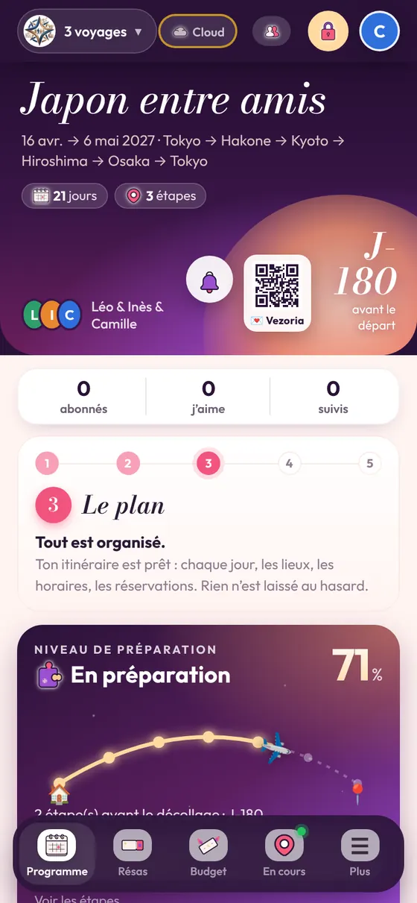

À quoi ça sert
Montrer ton voyage à quelqu’un, prêter ton téléphone, ou aider un proche qui craint de tout effacer.
Ce qui est bloqué
Toutes les modifications et suppressions, y compris celles du partage et des abonnés.
🤖 Android · Play Store🍏 iPhone · ouvrir dans Safari
Installer Vezoria gratuitement · sans pub · sans compte
Revenir
Touche à nouveau le cadenas pour repasser en mode modification.
À lire aussi
DécouvrirUne appli de voyage gratuite, sans pub, sans compteVezoria est une appli de voyage gratuite, sans publicité, sans compte ni pistage. Voyages partagés protégés, f…→Types de voyageVoyager en famille avec des enfantsPréparer un voyage en famille avec des enfants : rythme, trajets, logement, valise, papiers des mineurs. Tout …→L’appliSauvegarder ses voyagesRetrouver tous ses voyages sur un nouveau téléphone : le Cloud Vezoria (facultatif), le code personnel, la sau…→